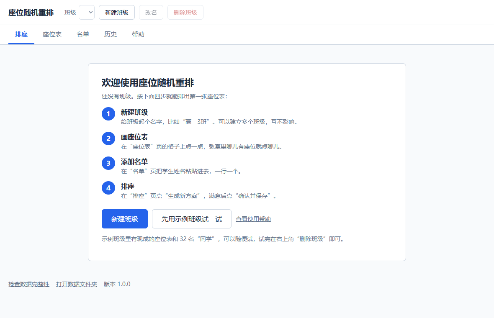
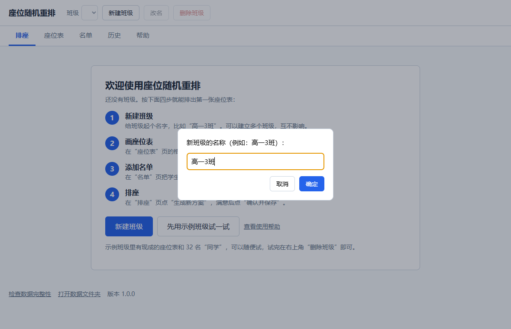
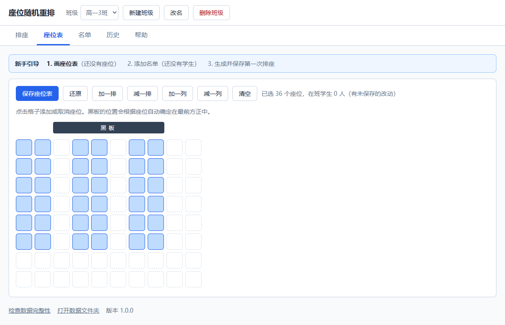
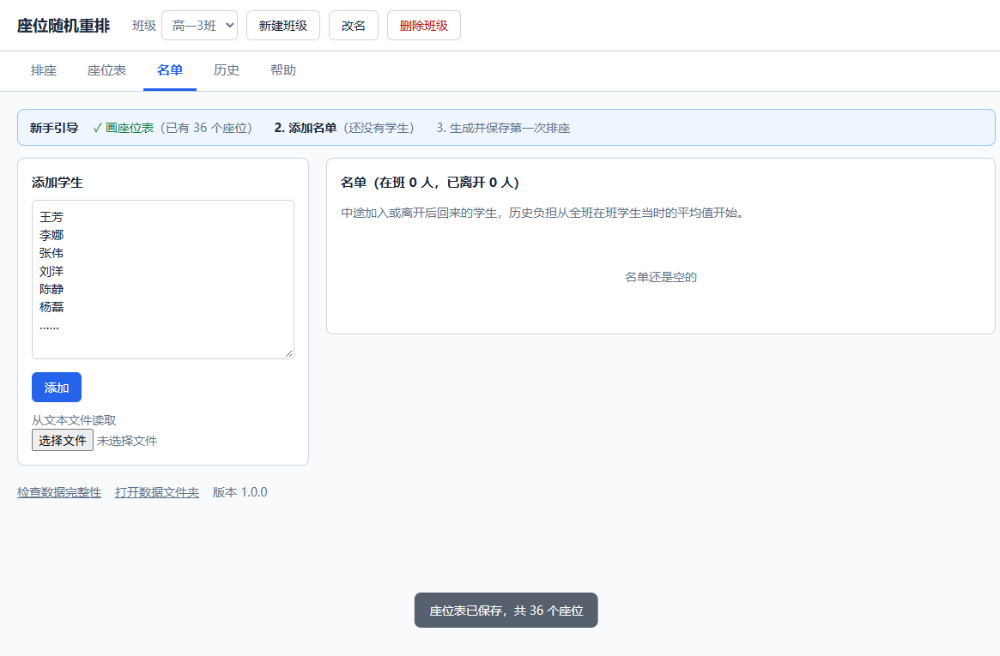
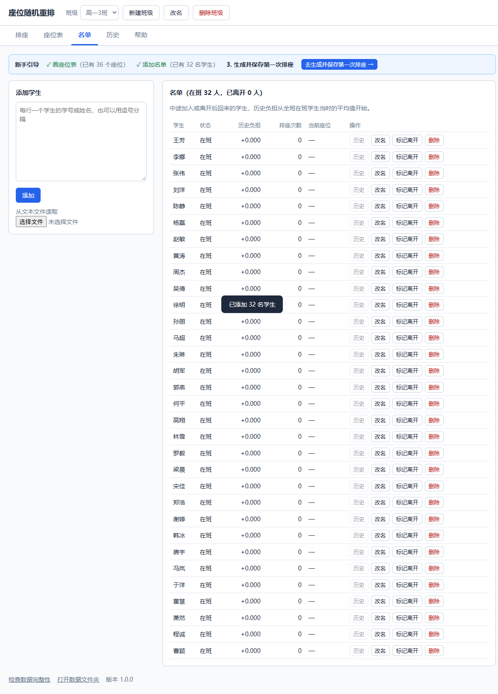
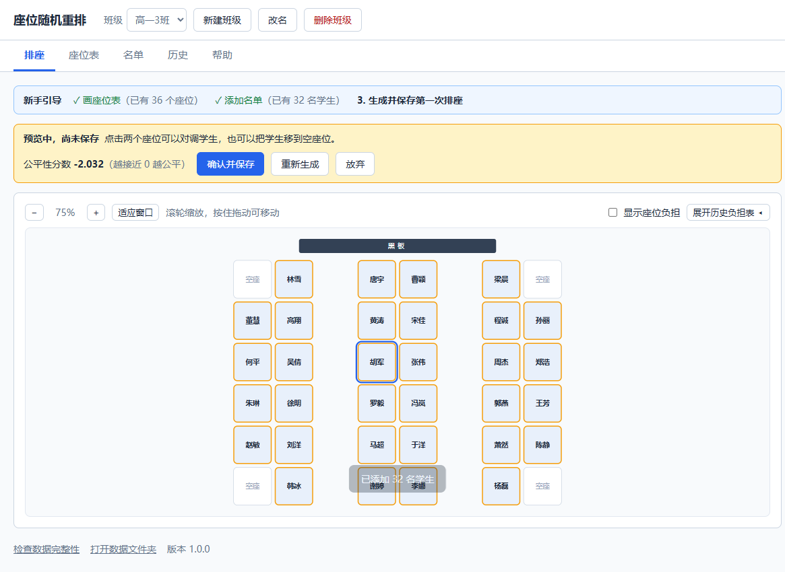
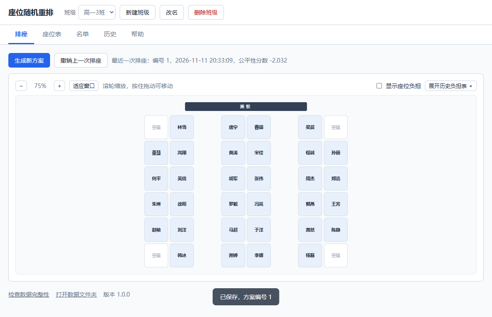
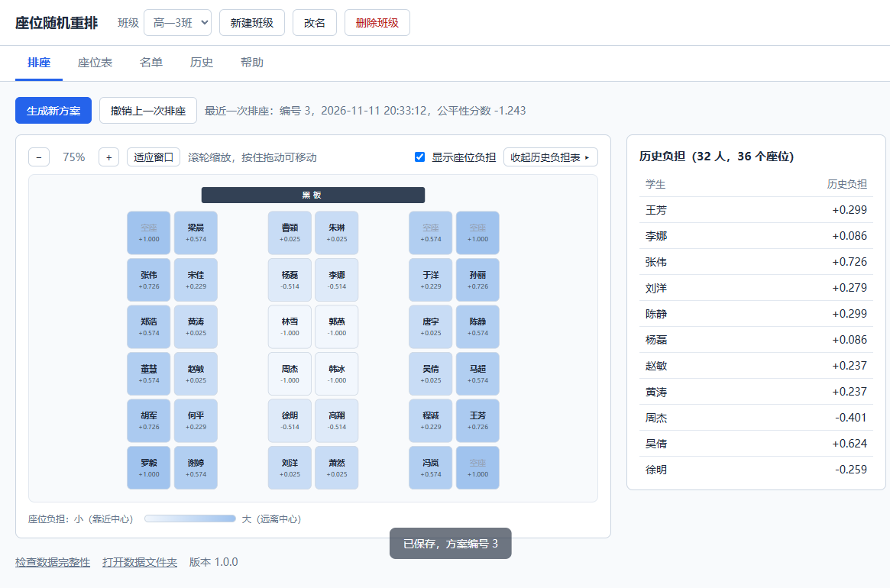
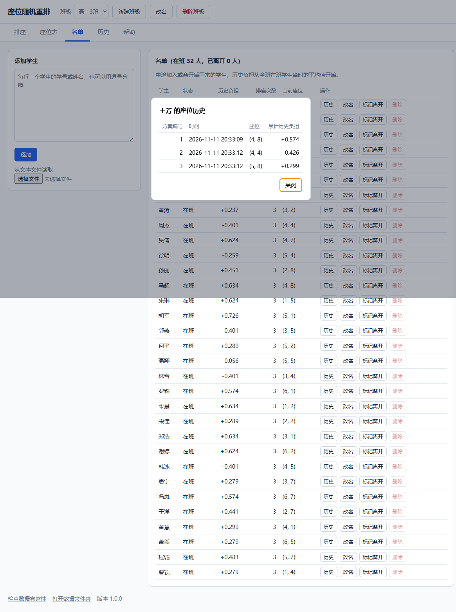
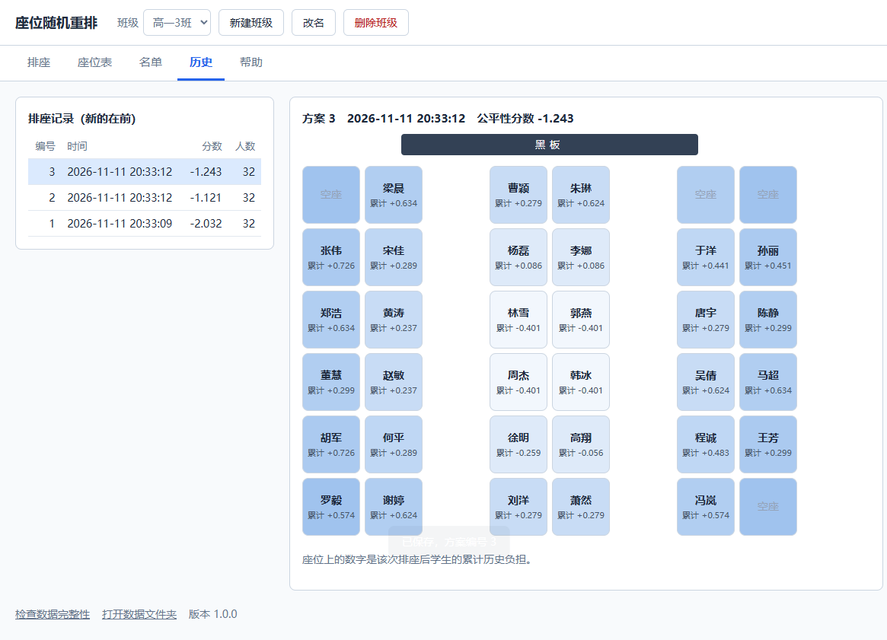

座位随机重排 使用说明
这是一个帮老师给全班重新排座位的小工具。它不是简单地把学生打乱，而是会记住每个人坐过哪里， 让坐过边角位置的学生之后更容易换到好位置，长期下来对每个人都公平。
它完全在您自己的电脑上运行，不需要联网，也不会把学生名单上传到任何地方。
一、打开程序
程序有两种形式，功能完全一样，选一种即可。
便携版（不用安装）
- 在压缩包上点鼠标右键，选“全部解压缩”，解压到任意位置（例如桌面，或者 U 盘）。
- 打开解压出来的文件夹，双击里面的 座位随机重排.exe。
安装版
- 双击安装包，按提示点“下一步”直到完成。不需要管理员权限。
- 安装好后，双击桌面上的“座位随机重排”图标，或者在开始菜单里找到它。
第一次打开时可能出现的提示
Windows 有时会弹出蓝色的“Windows 已保护你的电脑”。这是因为本程序是个人制作的，没有购买商业签名， 并不表示它有问题。请点提示里的“更多信息”，再点“仍要运行”。之后不会再提示。
打开后会出现程序自己的窗口，直接用鼠标操作即可，不需要输入任何网址。关闭窗口就是退出程序， 数据都是自动保存的。

二、第一次使用：四步排出座位表
页面上方有一条蓝色的“新手引导”，会告诉您现在该做哪一步，点它右边的按钮可以直接跳过去。
新建班级
点“新建班级”，输入班级名称（例如“高一3班”），点“确定”。

画座位表
点上方的“座位表”。页面上是一片格子，最上面是黑板。教室里哪儿有座位，就点哪个格子， 点中的格子会变蓝；点错了再点一次就取消。过道的位置空着不点。
- 格子不够用时，点“加一排”或“加一列”。
- 画好后一定要点左上角的“保存座位表”。

添加名单
点上方的“名单”。在左边的框里输入学生姓名，一行一个，然后点“添加”。
- 可以从 Excel 或 Word 里选中一列姓名，复制后粘贴到框里。
- 也可以点“从文本文件读取”，选择一个每行一个姓名的文本文件（.txt）。
- 有重名的学生时，请自己加以区分，例如“张伟（大）”“张伟（小）”，或者加上学号。


排座
点上方的“排座”，再点蓝色的“生成新方案”。程序会排出一张座位表给您预览。
- 这时还没有保存。不满意可以点“重新生成”，想几次就几次。
- 想单独调整某两个人：先点其中一个座位，再点另一个座位，两人就会互换。
- 满意后点“确认并保存”。保存之后，这张座位表才算数。


三、以后每次换座位
打开程序，点“生成新方案”，看一看，点“确认并保存”。就这三下。
程序记得每个人以前坐过哪里，所以每次排出来的结果都会照顾到之前坐得不好的学生。
四、排座页的更多操作
- 对调两名学生
- 预览时，先点一个座位，再点另一个座位。名字会滑动到对方的位置。
- 把学生挪到空座位
- 预览时，先点这名学生的座位，再点空座位。
- 放大、缩小、移动座位图
- 滚动鼠标滚轮可以放大缩小；按住鼠标左键拖动可以移动；点“适应窗口”恢复成刚好完整显示。
- 排错了，想反悔
- 点“撤销上一次排座”，座位回到上一次保存的样子。可以连续撤销多次。
- “公平性分数”是什么
- 表示排完之后全班的“历史负担”有多接近，越接近 0 越公平。手动对调学生后它会重新计算， 可以用来比较哪种调法更公平。平时不用管它。
- “显示座位负担”和“展开历史负担表”
- 默认是关着的，这样投屏时学生看不到这些数字。勾选或点击后可以看到每个座位的好坏程度，以及每个学生累计的情况。

五、管理名单
| 情况 | 怎么做 |
|---|---|
| 来了新同学 | 在“名单”页的框里输入姓名，点“添加”。 |
| 有同学转走或长期请假 | 点他那一行的“标记离开”。他不再参与排座，以前的记录都保留。 |
| 请假的同学回来了 | 点他那一行的“标记回来”。 |
| 名字写错了 | 点“改名”，输入正确的名字。 |
| 不小心多加了一个人 | 点“删除”。只有从来没有排过座的人才能删除；已经排过座的请用“标记离开”。 |
| 想看某个同学都坐过哪里 | 点他那一行的“历史”。 |

六、查看以前的座位
点上方的“历史”。左边是每一次排座的记录，点其中一行，右边就显示那一次的座位表。

七、管理多个班级
- 新建：点“新建班级”。每个班级有各自的座位表、名单和记录，互不影响。
- 切换：点左上方“班级”旁边的下拉框，选择要操作的班级。
- 改名：点“改名”。
- 删除：点“删除班级”，按提示输入班级名称确认。删除前程序会自动备份一次数据。
- 换了教室：在“座位表”页重新点选座位并保存即可，以前的记录不受影响。
八、数据、备份和换电脑
所有内容都自动保存在一个“数据文件夹”里，不需要手动保存。
| 数据文件夹在哪里 | |
|---|---|
| 便携版 | 程序所在文件夹里的 data 文件夹。把整个程序文件夹复制到 U 盘或另一台电脑，数据就跟着走了。 |
| 安装版 | 点程序里的“帮助”→“打开数据文件夹”就能看到。卸载或重新安装程序都不会删除它。 |
- 怎么备份
- 关闭程序，把数据文件夹整个复制到别处（例如 U 盘）就是一份备份。另外，程序在删除班级之前会自动备份， 放在数据文件夹里的 backups 文件夹中，保留最近 10 份。
- 怎么换电脑（安装版）
- 在旧电脑上点“帮助”→“打开数据文件夹”，把里面的 seat_history.db 文件复制出来； 在新电脑上装好程序并打开一次，再关闭，同样打开数据文件夹，把这个文件放进去（替换原有的）。
- 怎么从备份恢复
- 关闭程序，把备份文件改名为 seat_history.db，放进数据文件夹替换原有的文件，再打开程序。
- 怎么卸载
- 便携版：直接删除整个文件夹。安装版：在 Windows 的“设置”→“应用”里找到“座位随机重排”，点“卸载”。 卸载不会删除数据文件夹，需要的话可以手动删除。
九、常见问题
- 双击后没有反应，或者提示启动失败
- 便携版请确认已经解压，并且没有移走 _internal 文件夹。如果仍然不行， 请把数据文件夹里 logs 文件夹中的 app.log 文件发给程序的提供者。
- 打开的不是程序窗口，而是浏览器
- 个别较旧的 Windows 10 电脑缺少显示窗口所需的系统组件（WebView2），这时程序会改用浏览器显示， 同时出现一个提示框；功能完全一样。使用期间不要关闭提示框，用完后点提示框的“确定”即可退出。
- 杀毒软件提示有风险，或者程序文件不见了
- 本程序没有购买商业签名，个别杀毒软件可能误判并把 座位随机重排.exe 隔离。 可以在杀毒软件的“隔离区”或“保护历史记录”里选择“还原”或“允许”，也可以联系程序的提供者。
- 点“生成新方案”时提示座位数少于学生数
- 到“座位表”页多点几个座位并保存，或者到“名单”页把已经不在班的学生“标记离开”。
- 提示“数据已被其他操作修改”
- 说明这个班级刚才在别处被改动过（比如连点了两次按钮）。程序已经自动刷新，重新操作一次即可。
- 有的座位总是空着
- 学生比座位少时，程序会优先让大家坐较好的座位，把最偏的座位空出来。如果空着的反而是好座位， 可以在预览时手动把学生挪过去再保存。
- 可以指定某个学生必须坐在某个位置吗
- 目前不能自动指定。可以在预览时把他手动对调到那个位置，再保存。
- 程序需要联网吗？名单安全吗
- 不需要联网。所有数据只保存在这台电脑的数据文件夹里。
十、它是怎么排的（算法说明）
用大白话说
- 给每个座位打一个“负担值”。越靠近教室正中间，负担值越小（最小是 −1，最好的座位）； 越靠边靠角，负担值越大（最大是 +1，最偏的座位）。
- 给每个学生记一笔“历史负担”。他坐过的所有座位的负担值加起来就是他的历史负担。 总坐边角的学生，这个数会比别人高。
- 每次排座，随机生成 100 个方案。其中 50 个是“照顾公平的随机”：历史负担高的学生先挑， 而且他抽中好座位的机会更大；另外 50 个是完全随机的，作为对照。
- 给 100 个方案打分，选最好的一个。分数看的是：按这个方案排完之后，全班每个人的历史负担是不是接近。 越接近，分数越高（越接近 0）。
所以，单看某一次，座位仍然是随机的，谁也猜不到；但连续看很多次，每个人坐好座位和差座位的机会是均衡的。
稍微详细一点
在第 3 步里，每个学生抽取每个座位的机会（权重）同时考虑三件事：
| 考虑的事 | 含义 |
|---|---|
| 离黑板的远近要变 | 新座位和现在的座位相比，离黑板的距离差得越多，机会越大。坐前排的更容易换到后排，反过来也一样。 |
| 要换得远一些 | 新座位离现在的座位越远，机会越大。避免只是挪到隔壁。 |
| 不能总让同一个人吃亏 | 如果换到某个座位会让这名学生的历史负担高出全班平均，这个座位对他的机会就会被明显压低； 高出越多，压得越低。这一项的系数是前两项各自的两倍。 |
在第 4 步里，分数 = −（全班历史负担的方差 + 最高与最低之差）。两项都是越小说明越平均，所以分数越接近 0 越好。
几个特殊情况是怎么处理的
- 第一次排座：大家都没有历史，结果基本就是随机的。
- 学生比座位少：会优先用较好的座位，把最偏的座位空出来。
- 新同学、请假回来的同学：历史负担从全班当时的平均值算起，不会被当成“欠着很多差座位”。
- 允许抽到原来的座位：机会比较小，但不是零。
- 换了座位表：以前的历史负担照常保留，按新的座位表继续累加。
它做不到的事
- 它只按位置远近判断座位好坏，不知道谁近视、谁个子高、谁和谁不能坐一起。这些需要老师在预览时手动调整。
- 座位很少、空座又很多的小教室里，最好的座位偶尔会被空出来，可以手动把学生挪过去。